은열쇠의 문 공략
일단 들어가기에 앞서 은열쇠가 무엇인지보다는 내가 왜 이걸해야하는지 그 이유가 명확해야지하고싶은 마음이 들으실꺼 같기에 왜 은열쇠를 해야하는지 제가 설명하도록 하겠습니다.
자 일단 은열쇠를 왜 해야하나, 그것은 바로 현 암덱

이것이(지금 신앙을 뺀게있어서 마공이 낮음..) 한섭 최고 스테이지(2020년3월 기준)10-4스테이지를 앵간해서는 전복없이 오토로 무난하게 돌아가는 덱입니다.
3마리 110랩 넘어가면 되고요 속도도 높고 마공도 높아야해요. 아그냥 3마리 스펙을 겁나 높여야한다 생각해주시길 바랍니다.
그런데 이 요그소토스라는 서령 한마리면 10-4가 혼자서도 돌아갑니다.

이정도 스펙의 요그소토스면 10판중 3~4판정도 빼고는 다 성공합니다.
그런 사기서령을 얻을수 있는곳이 바로 은열쇠의 문이기 때문에 80층 이상을 깨셔서 요그소토스를 얻어야 하는것입니다.
각설하고 그렇다면 은열쇠를 시작해 보도록 하겠습니다. 은열쇠는 
그러니깐 젭알
노오오오력이 부족하다 좀 노력은 먼저하고 물어보자.
모처럼 공략이니 성심성의껏 도와드리겠습니다 ^^?
일단 시작하기에 앞서 은열쇠 메커니즘 밑 드림랜드(은열쇠 장소이름)의 스펙업에 관해 알려드리겠습니다.
글자만 보기 싫으실테니 몇가지 사진으로 설명을 대처하도록 하겠습니다.
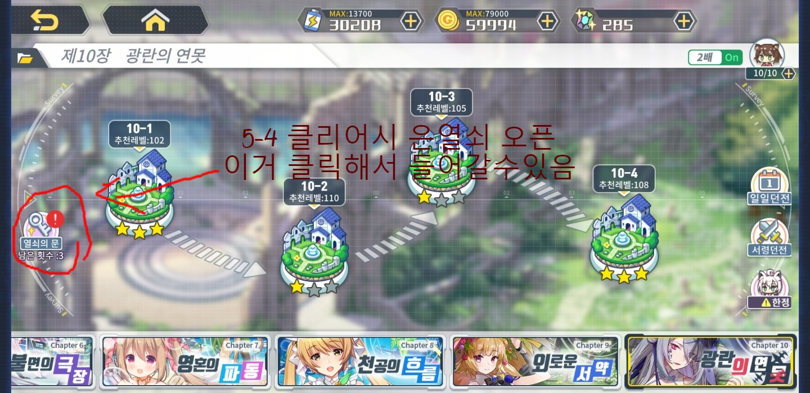
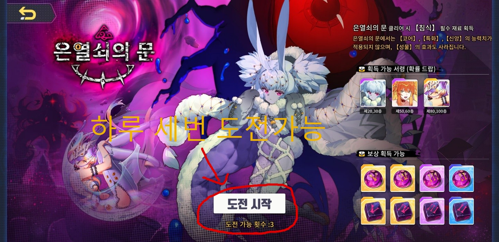
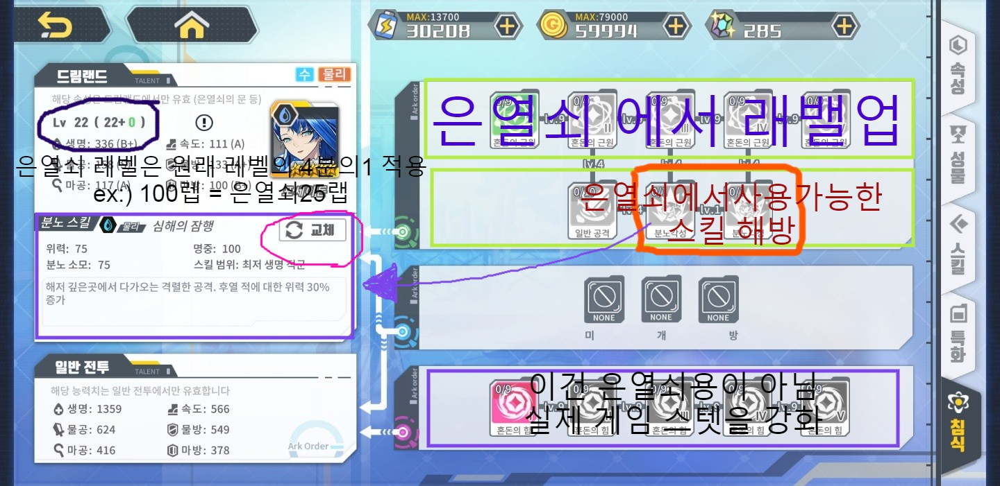
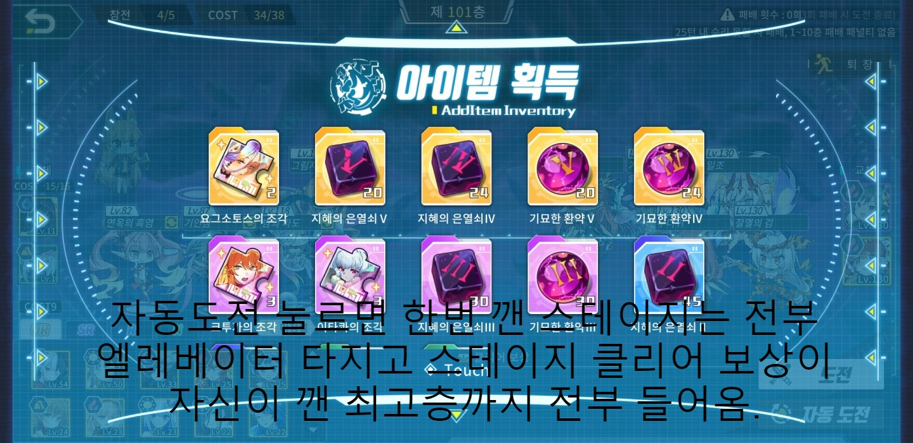
한번 올라가면 자기가 깻던 최고층까지 버튼 하나로 올라가서 보상만 받을수 있으니깐
시간에 여유가 될때 한번쯤 깨놓고 보상만 줍줍하시면 됩니다.
만약 안깨지는 층이 있어도 퇴각해서 다시 보상먹고를 몇일 하다보면 스펙업을 할수있으니 다시 등반하실수 있습니다 화이팅!!
자 그러면 이제 진짜 층을 올라볼까요??
『1~20층 공략법』 이건진짜 은열쇠 핵심코어 하나도 안넣고 조금만 생각해도 술술 깰수있다. 제발 이정도는 혼자 깨주세요ㅠㅠ..
『20~39층 공략법』 여기도 진짜 엄청쉬워요!

빛댕이 헤이드룬 레비 이렇게 하기만해도 충분함!!
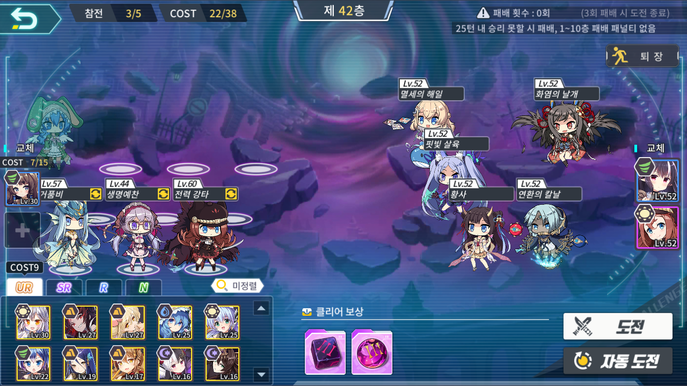
필자는 교체 스핑크스 필요없이 2일만에 이 3마리로 54층까지 등반했다.
뉴비쟝: 저기여 잠깐만요
이즈나: 네 뉴비쟝님 말씀하세요
 <ㅡㅡㅡ 이게빛댕이
<ㅡㅡㅡ 이게빛댕이
뉴비쟝: 빛댕이가 뭐에요?
이즈나: 아 그건

이 환령전당이라는 컨텐츠에서 2주마다 로테이션이 돌아가는 1시즌 2시즌이란게 있는데 그 시즌중 1시즌헬을 위 4마리다 클리어하면 얻을수있는 얻기쉬운 캐릭터입니다 ㅎㅎ

뉴비쟝: 아 진짜요?? (대충 못믿겠는 이모티콘)
잠시후...
뉴비쟝: 저기요 거 함만 나와봐요

이거 베히모스 아무리해도 안깨지는데요? 아까 쉽다하지 않았나요?
<어디를 둘러봐도 이즈나는 보이지 않았다.>
뉴비쟝:!@#$!@#$!@#$!@#!@#%!@#$!#$!$!@#%
(이 이야기는 픽션입니다 말랑말랑은 언제나 평화롭고 화목한 가족같은 분위기를 형성하고 있어요 ㅎㅎ)
뉴비쟝: 안되겠다. 흑우On! (음머어어어어ㅓㅓㅓㅓ)

뉴비쟝: 후 드뎌 얻었다 헿,,
이렇게 우여곡질 끝에 빛댕이를 얻었다면 성공하신겁니다! 자자 계속해서 은열쇠 공략으로 넘어가볼께요!!
『40~81층 공략법』 빛댕이 얻으신것처럼 이쯤에서 슬슬 환령전당 시즌1에서 불쥐 얻어주시고 해보시다가 못깨시겠으면 부담갖지마시고 길드톡방에 층수 사진올려주시고 이거 어떻게 깨야하냐고 물어봐 주세요!!
아그리고 1층부터 81층중 특별히 어려운 층수는 공략 해둘께요~
****추가준비중****
『82층 공략법』 축하합니다. 첫번째 헬게이트에 도착하셨습니다. 일단 레밸은 같지 않아도 운만좋으면 더 쪼랩때 깰수있고 운나쁘면 더 스펙업 해야 깰수도 있으니 배치만 참고해주세요

아잠만 저기 왜 암댕이가 들어가있어 참고하지 말아주세요 ㅋㅋㅋ;;;
이 사진의 주인은 82층을 클리어하는데 무려 3일이나 걸렸습니다. 아주 운나쁜 경우이고 처녀자리가 없는 찐따라서 더힘들었습니다. 솔직히 처녀자리만 있었으면 더 빨리 100층까지 밀어버렸을꺼같은데..
추억팔이는 그만하고 82층 클리어샷 몇개 보여주고 다음으로 넘어갈께요!
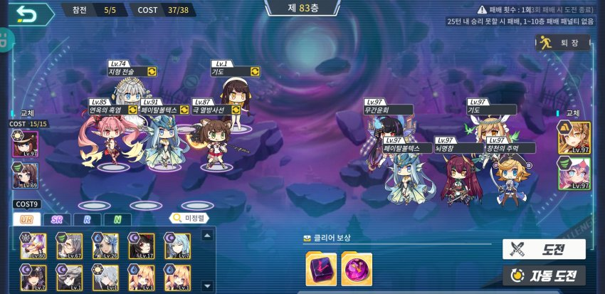
공사중
『100층 공략법』 이제 대망의 100층 공략입니다. 무수히 많은 공략이 있을수 있지만 많은사람들이 초창기에는 이렇게 클리어 했기에
이 방법을 올려봅니다.
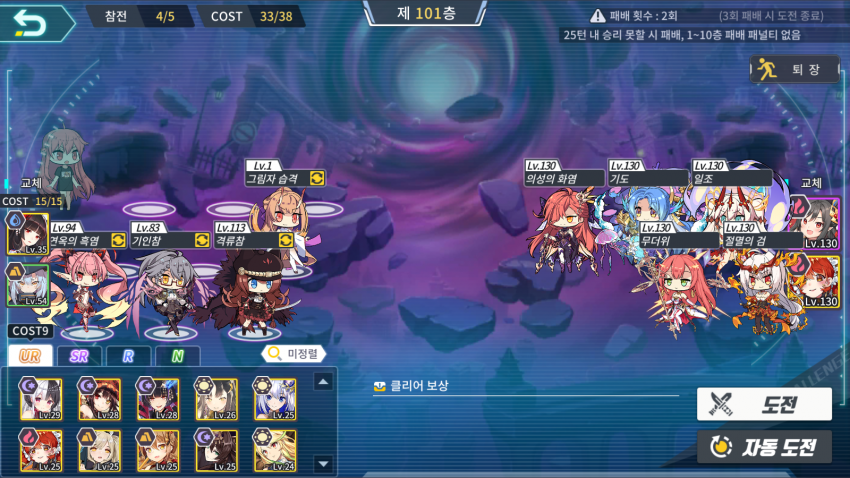
이게 100층 국민조합입니다. 조합에는 소량의 운빨요소가 첨가되 있습니다.
그 운빨요소는 무엇인가?
뭐 별로 안되여
응룡, 우보사틀라, 여와, 요그가 처녀 특성으로 방랭업하면 딜량이 부족해집니다.
뭐, 이정도? 운빨요소만 챙겨주시면 무난하게 저랩 클리어가 가능합니다. 에이~ 뽑기운 여기다 갖다 쓰시고 뽑기 멸망하시면 되죠 ㅎㅎ..
그러기 싫으시거나 이만한 운빨이 없는 저같은 분들은 로키하고 베드르 레벨을 많이 올려주시면 됩니다 ㅎㅎ.
자 이것으로 일반적인 은열쇠 공략은 끝내보도록 하겠습니다. 정보가 필요한 뉴비들은 이제 돌아가 보셔도 됩니다. 바이바이~
자 하지만 은열쇠를 100층까지'만'클리어 하신분이 이글을 보실수 있는데 뭔가 101층 깨고싶게 생기지 않았어요?
도전해보시면 알겠지만 미친듯이 몬스터가 튀어나옵니다.
제가알기로는 45마리가 나온다고 알고있어요. 그리고 클리어 해도 보상이 없구요. 그러니 굳이 클리어를 하지 않으시겠죠.
그러니 클리어하는데 들인 시간은 그냥 쓰레기가 된다는것입니다.
그러니 클리어도전은 안하시면 되여 다들잘가요 ㅎㅎ
.
.
.
.
.
다가 코토와루!
에헤헿 이즈나는 말안드뤄~
『101층 공략』
이야 은열쇠 오랜만에 해보네요 12월달에만 은열쇠를 했어서 감이 다 죽었을지 모르겠는데 9번안에 깻으면 좋겠네요.
『1트』
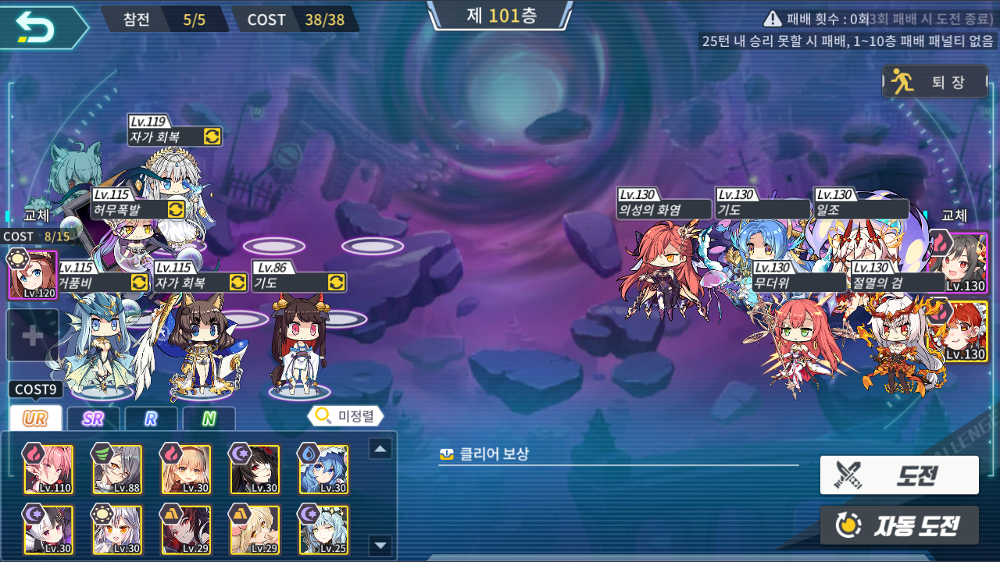
자 배치는 이렇게 했고 도전해보겠습니다.
허무폭발 이외에도 빛댕이가죽인거 요그 평타가 죽인거 많지만 임펙트 있는 허무폭발만 사진으로 보여드리겠습니다.
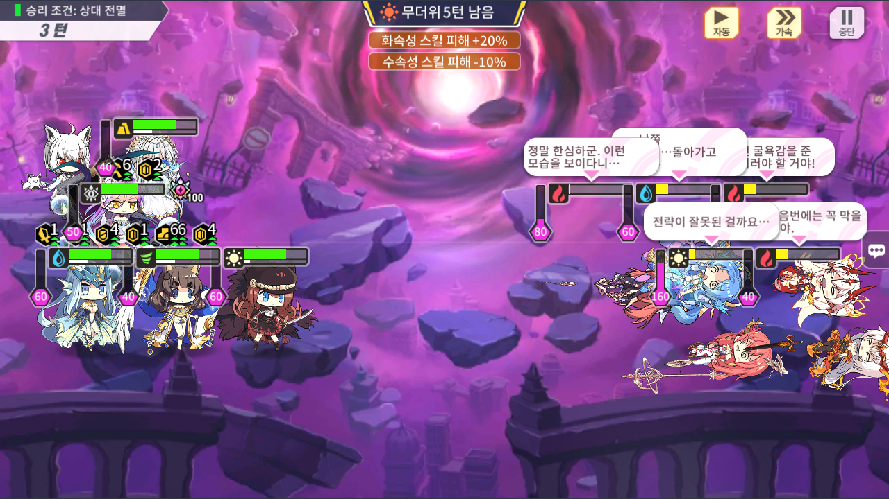
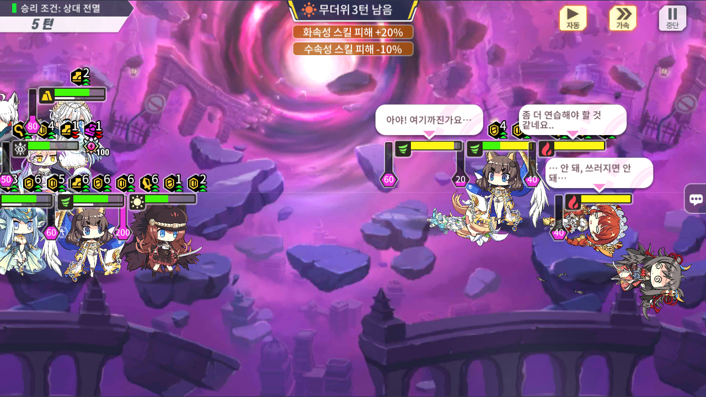
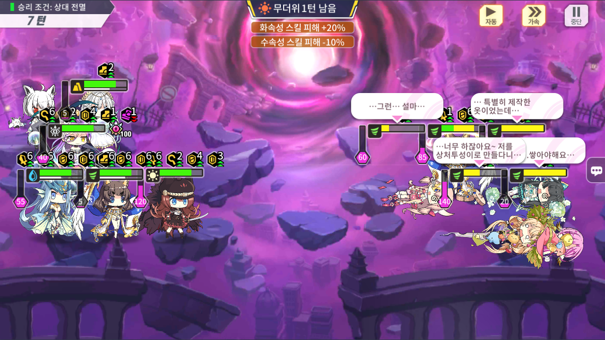
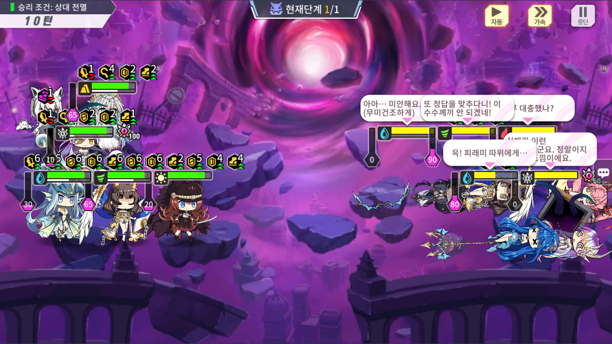
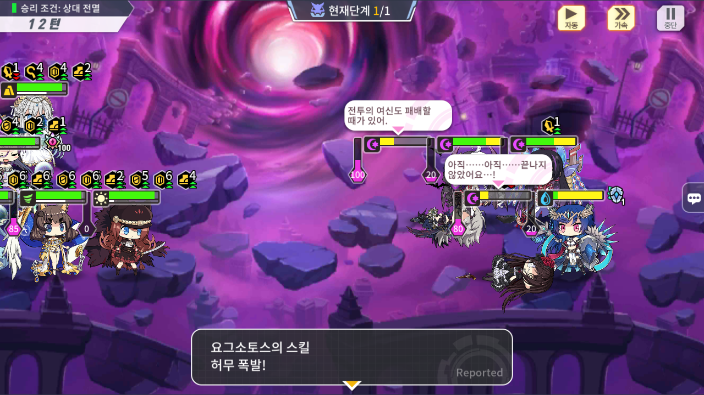
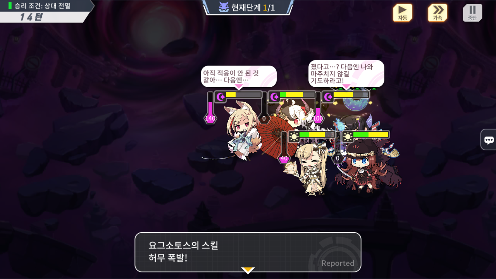
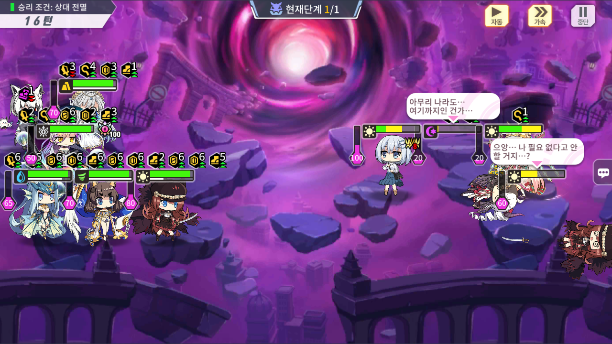
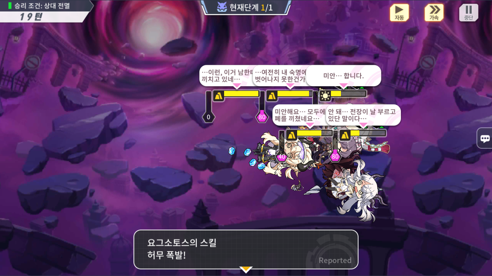
이렇게 열심히 달려오니 겨우 고지가 보였습니다.
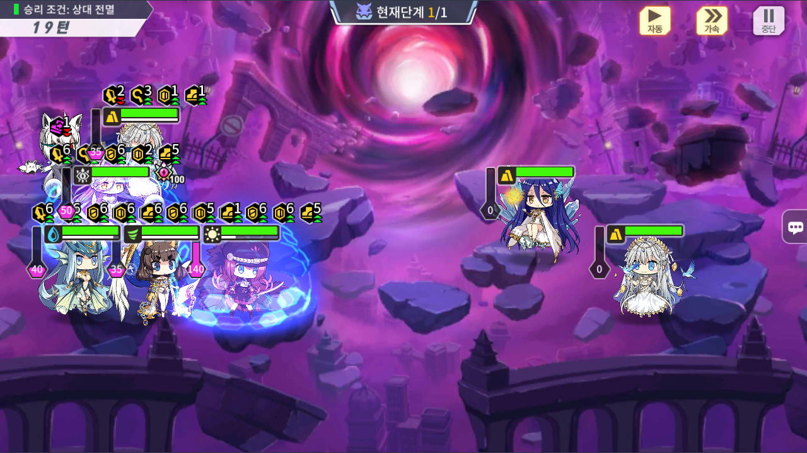
와~ 두마리 남았따!
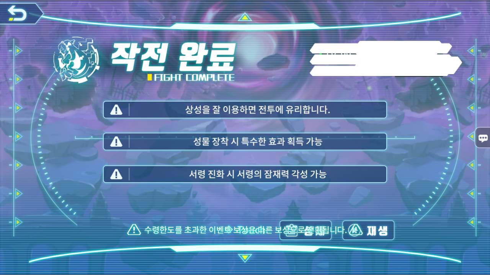
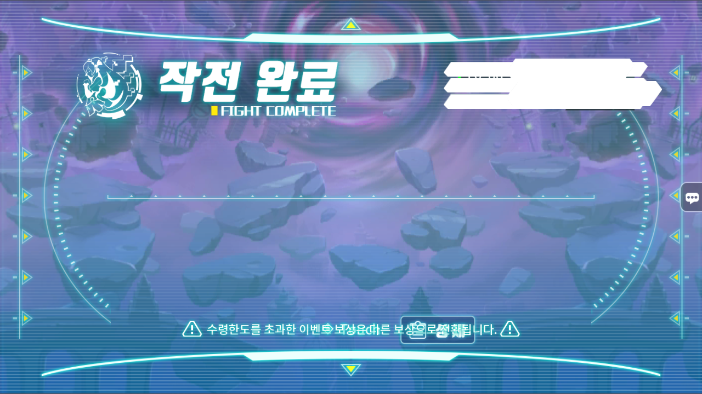
클리어
클리어하니 다시 101층이 나오네요.
음.. 뭐 아무것도 없네요.
끝.